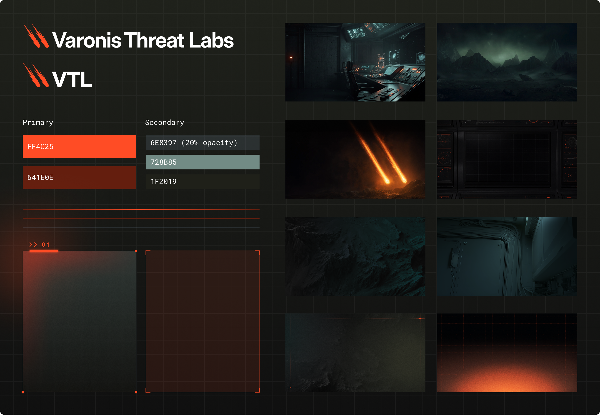
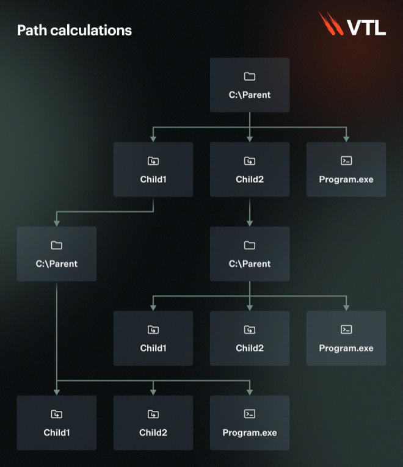
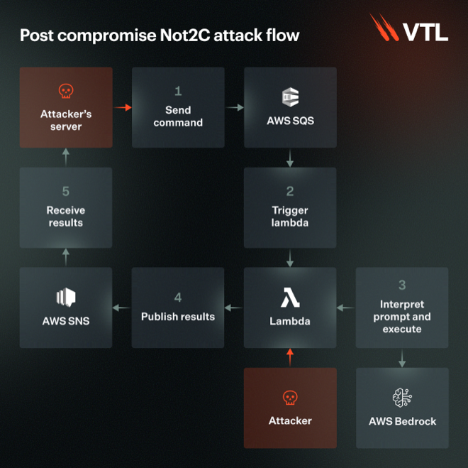
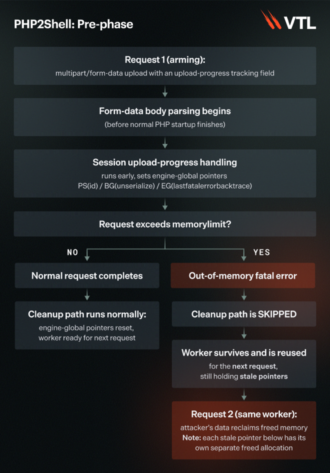
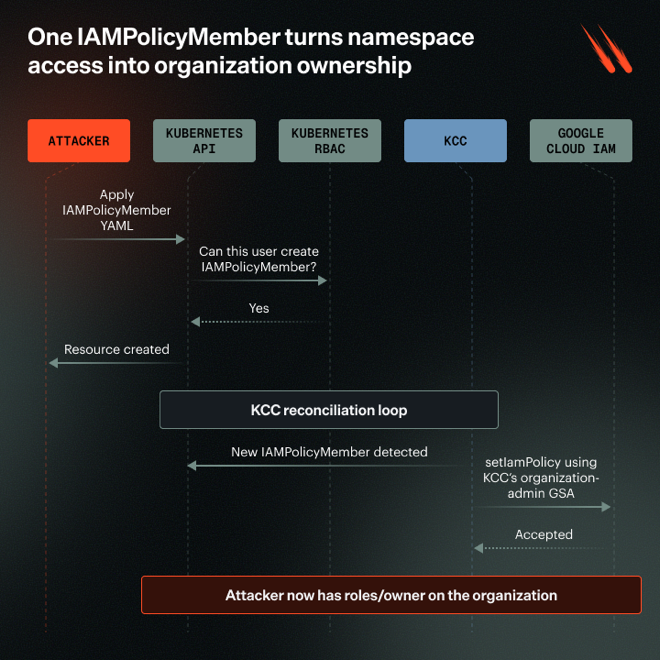
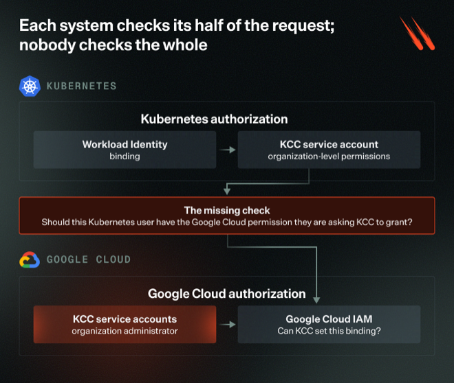
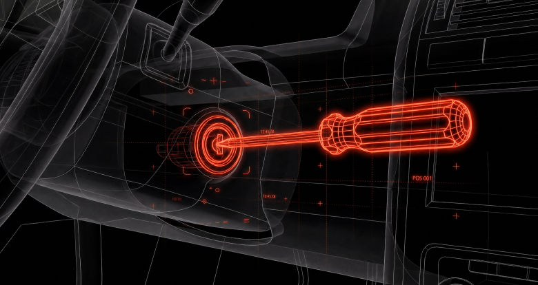
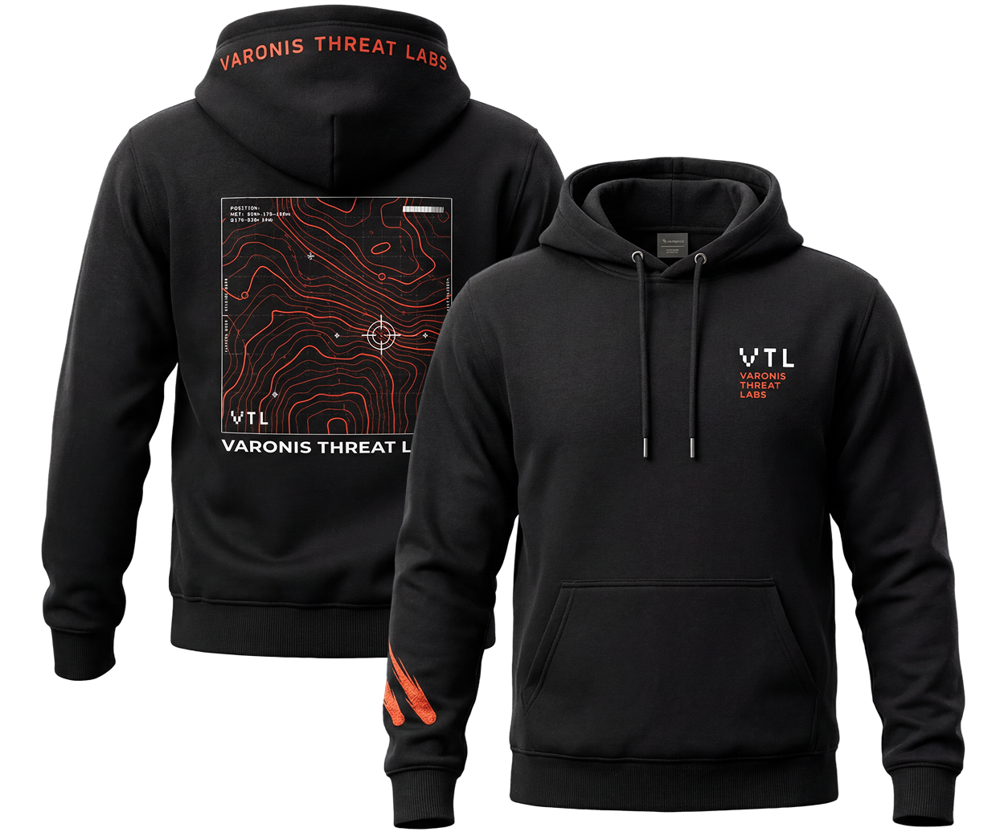

Varonis Threat Labs
Build a visual language that carries across formats.
VTL needed a recognizable identity within the wider Varonis brand. Research also needed to work across different formats, from a technical diagram to a report cover or social post. The sub-brand brings together a dedicated palette, atmospheric imagery, and graphic framing. Urgency, depth, and mystery provide a shared direction for the work.
The brand System
The VTL sub-brand has it’s own color palette, imagery, and unique graphics. The branding evokes a sense of urgency, depth, and mystery — common themes in VTL research.

From visual identity to research experience
The identity appears across research stories, reports, social content, and physical materials. These applications demonstrate how the sub-brand can extend beyond a single campaign.


Blog diagram
Blog diagram

Blog diagram
Blog HeroSwag

Threat Report
Though VTL research is usually focused around blog articles, deeper topics are released as reports that require corresponding promotional assets.